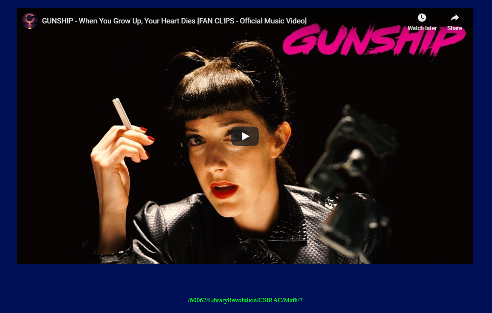
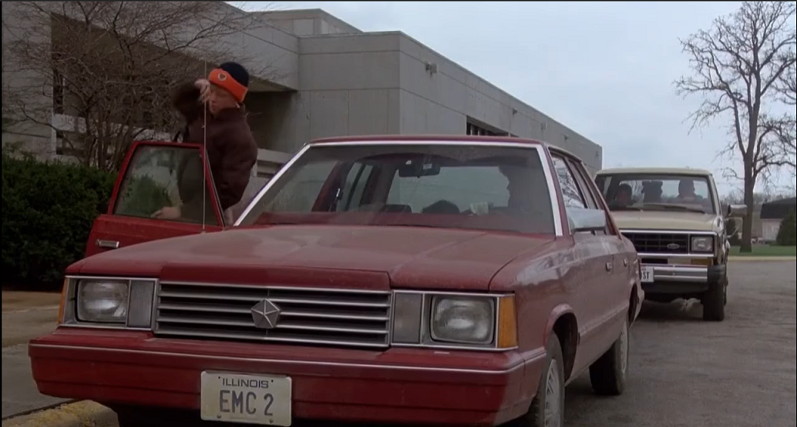
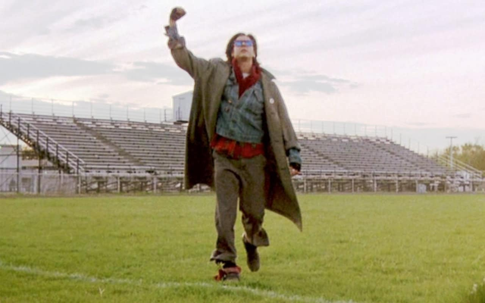

1o57 in Quarantine Ep0:pilot
Episode review with @elegin and @CryptoK
Welcome to the pilot episode of Lost in Quarantine. Brought to you by @1o57 and sponsored by cursing and red herrings. This is my review of the pilot episode with spoilers, be warned.
The opening scene: http://lostboy.net/60062

And the cursing and red herrings start.
This image is of the David Bowie album Hunky Dory and also the single “changes” of the same album.
In the html source we see a HINT.
*HINT IF YOU'RE NEW HERE**
BTW, like always, LostboY.net/WhenInDoubt.jpg

The person on the briefcase is Blaise Pascal.
To be clear,I didn’t know it was Pascal until I did this write up.
I just guessed it was Blaise de Vigenère because that briefcase needed a code to unlock it and we have
Npbegvqtlvbrylkvn to decipher and vignere would be a place to start.
{spoiler: it's a Vig}
That being said, look up Pascal Blaise Pascal which I think Lost wanted us to, specifically Pascal calculator
{update from 1o57 4/9/2020: "did you ever look up "Pascal Case" ? ;)"
HAHAHAH, yeah that makes a lot more sense and fits WAY better as context.}
But a key is needed and it's “changes” the song from the hunky dory album... which also had the same image on the single
key: changes
cipher: Npbegvqtlvbrylkvn
answer: libraryrevolution
But you might be asking WTF is up with the 60062 URL?
We will get to that a little later, for now the answer to this page is a hint to it. Oh screw it, it is the zipcode of the school in The Breakfast Club and other John Hughes movies. {The header image}
http://lostboy.net/60062/LibraryRevolution/

The image is from https://theindustryobserver.thebrag.com/the-first-computer-to-ever-play-music/
The first computer to play music..CSIR Mark 1 (later named CSIRAC, the CSIR Automatic Computer)
But we still have the cipher text, The hints are maybe, possibly , could be, conceivably , perchance , within realm of possibility , hell only 1o57 knows for sure, in the TITLE tag and possibly the fiddler on the roof comment.
<title> The simple things in life... </title>
<!-- Without our traditions, our lives would be as shaky as a fiddler on the roof. -->
Whatever the hints are or are not the cipher text is encoded with good old ROT13.
guroevqtrbagurevirexjnv
thebridgeontheriverkwai
The deciphered text doesn’t work as the answer.. < cursing and red herrings > ...... After way too long looking at the everything “the bridge on the river kwai”, we ended up back on the photo and CSIRAC which played ‘Colonel Bogey March’ which was in “the bridge on the river kwai”. So, long pause, the answer is CSIRAC!!
http://lostboy.net/60062/LibraryRevolution/CSIRAC/

Uh yeah, wtf, definitely some weird 💩 going on here. Not going to lie, this took some time. To sum up the photo you have bender that awkward text and the dog and two bowls. {Orginal post} Apparently, dug was cut from the episode, poor little guy.
Cuteness aside, dug didn’t help with the plot or pacing of this episode so I see why Lost cut him.
Taking a step back to reading the name of the image file “Only Straight Re morse” , <title>With A Dash of Calibri to Taste </title> Data, and overall look of the image, I had nothing but something maybe to do with morse code.
After some soul searching and internal reflection of my life decisions, cyptok pulled a rabbit out of his hat and figured it out.
So here goes my best effort of explaining the 1o75ian remorse calibri cipher :
For each Letter that has only straight lines it becomes a dash and letters with curves in them becomes a dot, ignoring punctuation ...
DEAR .--. = P OL’ .- = A DOG ...= S
In the end you will get PASSPHRASEMITH
YAHHH!!!!! we are done..everyone goes home thanks for all the fish. Well that didn’t work.. I know. I felt the same way. Cursing and red herrings ensued for quite awhile. To make a long story a little longer, I will let Lost explain:
"For those stuck in a mith,
I would single out the letter that your eye sees,
A different letter can sometimes change an entire word-"
Turns out the I is an A, to be fair they are only a dash apart, so it looks like Lost did a sprinkle and not a dash in the 1o75ian remorse calibri cipher recipe.
So - - - - MATH is the answer!
http://lostboy.net/60062/LibraryRevolution/CSIRAC/Math/

Cursing and red herrings.
In the html source
<!-- I don't think the kind of friends I'd have would mind... -->
Not going to go into the paths that we went down for this cause it ended up being a gimme, goofed it for a minute or 1000. The quote is from Allison in The Breakfast Club, remember from the original URL /60062
The only real tricky piece was using her last name AllisonReynolds
http://lostboy.net/60062/LibraryRevolution/CSIRAC/Math/AllisonReynolds/

This is all about Brian from The Breakfast Club. Not a lot of hints in the page just
<title>Find a way.</title>
<img src="BriansDish.jpg">
A lot of really weird paths were taken here and I am not comfortable telling you all where I ended up.. It wasn’t pretty. Some things can’t be unseen. After reading ALL of Brian's parts in the script multiple times and trying not very nice things, I was gifted with some hints from Lost. But before that just in case anyone wants to buy the dish Brian is holding --- BriansDish
The hint I got was basically reading the script would not help. HOLY CRAP that was an understatement. The Dish is actually the front plate on Brian's mom's car in the beginning of the movie
http://lostboy.net/60062/LibraryRevolution/CSIRAC/Math/AllisonReynolds/EMC2/

the html src:
<title>Quarantine Cuisine</title>
<;img src="LetItSnow.jpg">
<!-- Sixteen Candles was a pretty cheesy movie, but BC held some truth. -->
With all the Breakfast Club research that we were doing this is pretty much immediate, or so we thought. To explain; Here is the scene of that picture in the movie.
Trivia fact: parmesan cheese was used for her dandruff.
We have “cuisine”, the cheesy quote, and the dandruff scene. Pretty clear ParmesanCheese .
So ParmesanCheese didn’t work.. Yeah I know, we couldn’t figure out what was going on.. I can’t tell you how many times I watched the lunch scene, because I didn’t count,but it was a lot.
1o57 swoops in to save the day on this one with the following message:
“If you're stuck in the wheel of cheese, consider common, INCORRECT spellings ;) ... because reasons....”
ParmeseanCheese lol...that was actually pretty funny
http://lostboy.net/60062/LibraryRevolution/CSIRAC/Math/AllisonReynolds/EMC2/ParmeseanCheese/

The html source:
<title>Arrow of Light</title>
<img src="MobyDick.jpg">
This one is a bit on the outer edge. Let's take the quote from The Breakfast Club Bender to Brian: “SO, AHAB ... KYBO MEIN DOOBAGE”
Ahab obviously refers to moby dick and low and behold Kybo is a Boy Scout term for an outhouse. Arrow of Light is a cub scout award. So going through some trial and error we get Kybo as the final solution!
http://lostboy.net/60062/LibraryRevolution/CSIRAC/Math/AllisonReynolds/EMC2/ParmeseanCheese/Kybo/

There ya go. If you made it till the end, good for you. I am willing to bet self quarantining might have something to with reading the credits here. But since you are here.
As always, cryptok and I would like to thank 1o57 for putting this together and taking our minds off current events for a bit and we kinda are looking forward to another episode of 1o57 in Quarantine, only because we will still be in Quarantine. I am hoping for a reboot, prequel, or sequel. But, if we are still in Quarantine then I will definitely be looking forward to being 1o57 in Quarantine again soon.
